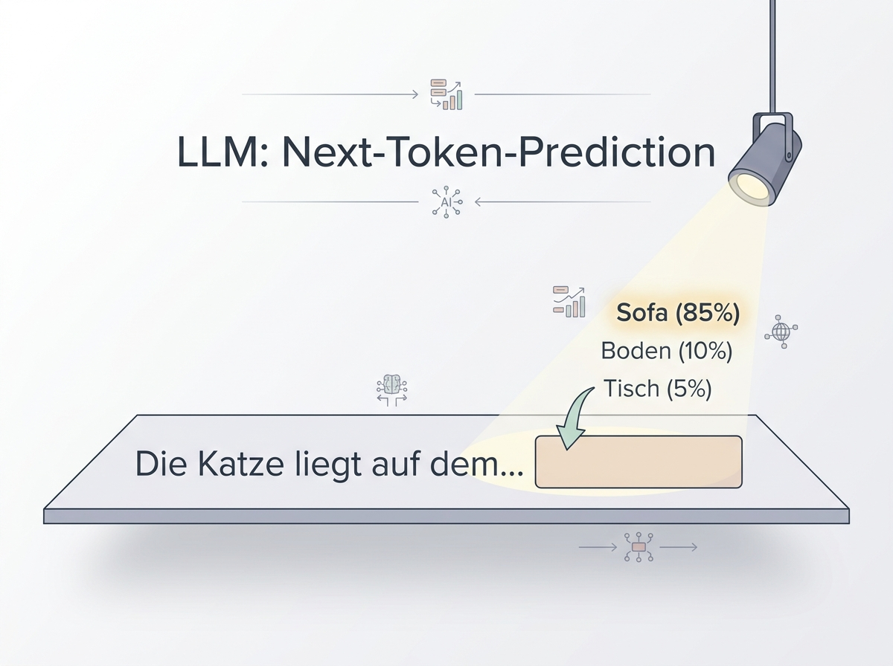
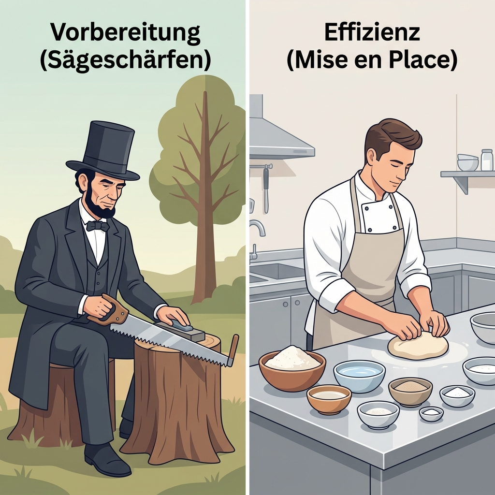
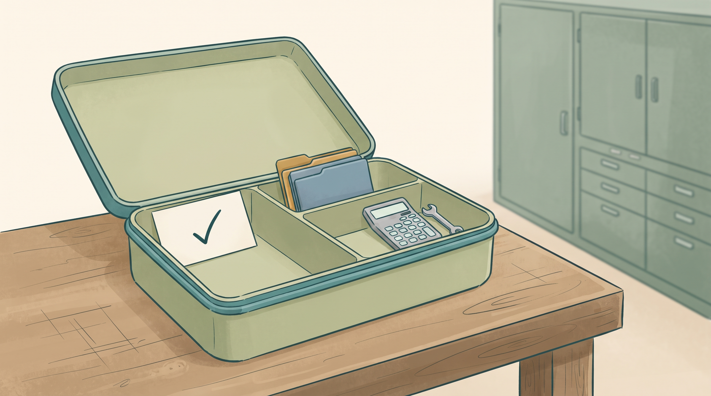

Textstück
„Liefer“
WOCHE 03
Von Tokens zur geprüften Antwort
Prof. Dr. Mathias Engel
Wissen → selbst ausprobieren → gemeinsam auswerten
„Liefer“
7
[0,2; −0,4; 0,8]
Wie eine Artikelnummer: Sie identifiziert einen Eintrag.
Eine gelernte Darstellung, mit der das Modell weiterrechnet.
ID 900 ist nicht „bedeutender“ als ID 7.
IDs und Vektorwerte sind frei gewählte Lehrwerte.

1. Das Modell bewertet mögliche nächste Tokens.
2. Das Auswahlverfahren bestimmt eine Fortsetzung.
3. Diese wird angehängt und beeinflusst den nächsten Schritt.
Bildwerte 85/10/5 % und Klickfolge sind synthetische Illustrationen. Das Modell kann mehr Kontext als das letzte Wort berücksichtigen.
Zerlegen Sie Lieferfristen und Lieferfrist mit diesen beiden Lehrvokabularen:
Liefer · frist · en
Lieferfristen · Lieferfrist
Regel: Von links nach rechts immer den längsten passenden Eintrag nehmen.
Zerlegung und Tokenzahl notieren.
Ergebnisse vergleichen.
Warum ist die Textlänge allein keine Tokenzahl?
Papierexperiment; noch keine Ausgabe eines produktiven Tokenizers. Lösung folgt.
| Text | Vokabular A | Vokabular B |
|---|---|---|
| Lieferfristen | Liefer | frist | en → 3 | Lieferfristen → 1 |
| Lieferfrist | Liefer | frist → 2 | Lieferfrist → 1 |
Die Tokenzahl hängt vom Tokenizer und seinem Vokabular ab.
Bei einer echten Messung notieren: Werkzeug, Vokabular, Datum, genaue Eingabe.
Die Selbstauskunft eines Chatbots über seine Tokens ersetzt keine Tokenizer-Messung.

Wie beim Kochen: Nur bereitgestellte Zutaten liegen auf der Arbeitsfläche.
Für den Modellaufruf: Auftrag, ausgewählte Dokumente, Regeln und gegebenenfalls Werkzeugergebnisse.
Im Angebotsfall: beide Angebote, gewünschte Menge und Terminanforderung.
Nicht alles im Archiv ist automatisch im aktuellen Kontext.
Informationen werden gewichtet und kombiniert.
0,50 × 10 + 0,25 × 20 + 0,25 × 40 = 20
Zugriff auf verfügbare frühere Positionen – nicht auf die noch unbekannte Fortsetzung.
Illustration der Rechenidee. Gewichte und Value-Werte sind didaktisch; keine gemessene Attention dieses Angebots.
Sie sollen die Kosten vergleichen und prüfen, ob eine Kaufempfehlung möglich ist. Welche vier Karten gehören auf die Arbeitsfläche?
Aktuelles Angebot A
Aktuelles Angebot B
Auftrag: 120 Stück, Termin prüfen
Regel: netto + Versand vergleichen
Abteilungs-Sommerfest
Veraltete Preisliste
Kopie desselben Angebots A
Teamfoto
2 Min lesen · 5 Min auswählen und begründen · 3 Min Gegenprüfung. Lieferbedingungen in den Angeboten nicht wegkürzen.
Preise, Packungsgrößen, Versand und Lieferbedingungen.
Die geforderte Menge und der Prüfauftrag.
Gleiche Einheiten und vollständige Nettokosten.
Die Auswahl A–D reicht für die Prüfung – nicht unbedingt schon für eine Bestellung.
Noch unklare Termine oder eine fehlende technische Freigabe müssen erfragt werden. Duplikate und fachfremde Dateien helfen hier nicht.
pᵢ = exp(scoreᵢ / T) ÷ Summe aller exp(score / T). Lehrmodell mit nur drei Kandidaten.
Der schon bevorzugte Kandidat wird noch wahrscheinlicher.
Die Verteilung wird flacher: andere Kandidaten werden häufiger gewählt.
Temperature verändert die Auswahl – nicht das Wissen des Modells.
| Kandidat | Wahrscheinlichkeit | Kumuliert |
|---|---|---|
| A | 60 % | 60 % |
| B | 25 % | 85 % |
| C | 10 % | 95 % |
| D | 5 % | 100 % |
A: 60/85 ≈ 70,6 % · B: 25/85 ≈ 29,4 %
Top-P nimmt die kleinste führende Kandidatenmenge, die die Schwelle erreicht.
Eigene Lehrverteilung; gesondertes Beispiel, nicht dieselben Scores wie auf Folie 11.
Welche Fortsetzung passt zum bisherigen Text?
Stimmt die Zahl mit Angebot und Rechnung überein?
„Der Versand ist bereits enthalten.“
Im Angebot steht „zzgl. 90 € Versand“. Die Behauptung ist falsch.
Auch Temperature 0 macht eine falsche Aussage nicht wahr.
Greedy-Auswahl als Grenzfall: jeweils einen maximal bewerteten Kandidaten wählen. Kein allgemeines Reproduzierbarkeitsversprechen.
pᵢ = exp(scoreᵢ / T) ÷ Summe aller exp(score / T). Lehrmodell mit nur drei Kandidaten.
Noch keine Ziehung.
1 Min Auftrag · 6 Min je 100 Ziehungen bei T = 0,5 / 1 / 2 und Ergebnisse notieren · 3 Min vergleichen. T-Wechsel startet einen neuen Versuch. Keine echte LLM-Abfrage.
A ≈ 66,5 % · B ≈ 24,5 % · C ≈ 9,0 %.
Ihre 100 Ziehungen müssen nicht genau 67 / 24 / 9 ergeben.
Ob A, B oder C fachlich richtig ist, steckt nicht in diesen Häufigkeiten.
Mehr Zufallsvielfalt ist eine Auswahlwirkung – kein Beweis für bessere Antworten.
Bei T = 0,5 dominiert A stärker; bei T = 2 verteilt sich die Auswahl breiter. Vergleichen Sie mehrere Durchläufe.
Danach prüfen wir Begründungen
an einem konkreten Angebotsvergleich.
„Nehmen Sie Angebot B.“
Menge klären → Packungen rechnen → Kosten vergleichen
Lieferbedingungen und fehlende Angaben kontrollieren
System 1 / System 2 ist hier die Metapher für direkte versus aufwendigere Bearbeitung.
Zusätzlicher Aufwand lohnt sich, wenn er die geprüfte Lösung verbessert.
Die Metapher behauptet keine zwei menschlichen Denksysteme im Modell.
B: 170 € für 10 Stück.
120 ÷ 10 = 12 Packungen.
12 × 170 + 90 = 2.130 €.
Wann erfolgt die technische Freigabe?
Eine gute Begründung lässt sich mit Quellen und Werkzeugen kontrollieren.
Turpin et al. (2023): Erklärungen verschwiegen in untersuchten Situationen verzerrende Einflüsse. Sichtbarer Text ist kein verlässliches internes Gedankenprotokoll.
| Angebot A | Angebot B | |
|---|---|---|
| Preis | 18 € / Stück | 170 € / 10 Stück |
| Versand | 60 € | 90 € |
| Kosten für 120 Stück | 120 × 18 + 60 = 2.220 € | 12 × 170 + 90 = 2.130 € |
| Lieferfrist | 10 Tage nach Bestelleingang | 10 Tage nach technischer Freigabe |
B ist 90 € günstiger. Ohne Freigabedatum kennen wir Bʼs Liefertermin nicht.
Fiktiver Buchfall, alle Beträge netto. Keine Rabatte oder weiteren Kosten.
„B kostet 2.130 € statt 2.220 €. Damit ist B 90 % günstiger. Beide liefern nach zehn Tagen; B sollte sofort bestellt werden.“
Auftrag: Markieren Sie richtige und falsche Teile. Korrigieren Sie den Text und formulieren Sie eine konkrete Rückfrage.
Zahlen und Behauptungen markieren.
Kurzantwort mit Rechenbeleg schreiben.
Welche Handlung ist noch nicht freigegeben?
Die Aussage ist absichtlich fehlerhaft. Angebote und Bedingungen: vorherige Folie oder Arbeitsblatt.
| Prüfpunkt | Korrektur |
|---|---|
| Kosten | B: 2.130 €; A: 2.220 €. Diese Zahlen stimmen. |
| Preisvorteil | 90 €; bezogen auf A etwa 4,05 %, nicht 90 %. |
| Termin | „10 Tage“ hat unterschiedliche Startpunkte. Freigabedatum fehlt. |
| Entscheidung | Keine sofortige Bestellung auslösen. Bedingungen und Freigabe klären. |
Rückfrage: Wann liegt die technische Freigabe für B vor?

Auftrag: zwei Angebote vergleichen, nichts bestellen.
Wissen: diese Angebote und die gültige Vergleichsregel.
Werkzeuge: Extraktion prüfen, Preise rechnen, Ergebnis ausgeben.
Ein klar begrenzter Auftrag braucht nicht den ganzen Aktenbestand.
⚙ Gelernte Parameter
„Ausstattung der Fachkraft“
▤ Material im Aufruf
„Größe der Arbeitsfläche“
◷ Berechnung bei der Bearbeitung
„Arbeitszeit“
Mehr Parameter, mehr Kontext und mehr Rechenaufwand sind nicht dasselbe.
Metaphern, keine Gleichsetzung von Modell und Mensch. Keiner der drei Werte allein garantiert Qualität.
Preis, Einheit und Versand aus dem Text extrahieren.
Pflichtfelder validieren und Gesamtkosten rechnen.
Unklare Klausel? Rückfrage oder fachliche Eskalation.
Trinity-Prinzip: spezialisierter Worker + passende Tools + aufgabenbezogenes Wissen; die Werkstatt steuert Übergaben und Prüfungen.
Ein kleineres Modell ist ein Testkandidat für eine klare Teilaufgabe.
Belcak et al. (2025) begründen diese Richtung als Position. Die Eignung für unseren Fall muss gemessen werden.
Aus gleich aufgebauten Angeboten Menge, Preis und Versand lesen.
Aus validierten Zahlen Nettosumme und Preisunterschied berechnen.
Zwei widersprüchliche Lieferklauseln, ein Datum fehlt.
Legen Sie je Fall fest: Modell oder Werkzeug? Welcher Test? Wann Rückfrage oder Mensch?
2 Min lesen · 5 Min zuordnen · 3 Min einen Fehlerfall pro Zuordnung prüfen.
| Fall | Geeigneter Start | Prüfung / Eskalation |
|---|---|---|
| A | Kleineres Modell als Extraktionskandidat | Felder gegen Original prüfen; unbekanntes Layout eskalieren. |
| B | Formel oder Code | Einheiten, Pflichtfelder und bekannte Rechenfälle testen. |
| C | Modell zur Aufbereitung + fachliche Prüfung | Widerspruch belegen, fehlendes Datum erfragen; nicht selbst entscheiden. |
Vergleichen Sie Fehler, Gesamtzeit und Kosten auf denselben Testfällen.
Architekturvorschlag, keine gemessene Bestenliste. Keine festen Parametergrößen oder Modellmarken erforderlich.
Nein. Die Einheiten hängen vom Tokenizer und Vokabular ab.
Nein. Die Anwendung muss die Inhalte tatsächlich in den Aufruf aufnehmen.
Nein. Auswahlwahrscheinlichkeit ist keine Wahrheitsprüfung.
Nein. Eingaben, Formel, Rechnung und Bedingungen müssen geprüft werden.
Nein. Mit validierten Eingaben genügt ein Rechenwerkzeug.
5 Min entscheiden und begründen · 3 Min gemeinsam aufdecken · 2 Min offene Fragen.
Tokens + Vektoren
Kontext auswählen
Fortsetzung bestimmen
Prüfen und handeln
Woche 4: Aufgabe, Kontext, Beispiele und Ausgabeformat präzise formulieren.
Ein guter Auftrag baut auf verstandener Modellmechanik auf.
Tokens → IDs → Vektoren; Ausgabe entsteht schrittweise.
Relevanten Kontext auswählen; Attention kombiniert Informationen.
Temperature und Top-P ändern Vielfalt, nicht Fakten.
Im Angebotsfall: 90 € günstiger, Liefertermin noch offen.
Klare Teilaufträge, geprüfte Daten, deterministische Rechnung; Modell testen.
Tokens & Attention
Sennrich et al. (2016), ACL, S. 1715–1717.
Vaswani et al. (2017), Attention Is All You Need, S. 3, 5–6.
Auswahlverfahren
Holtzman et al. (2020), ICLR, Abschnitte 3.1 und 3.3; PDF S. 4, 6.
Begründungen & Modellwahl
Turpin et al. (2023), NeurIPS, PDF S. 1–3.
Belcak et al. (2025), Positionspapier v2, S. 1–2.
Lehrmaterial & Bilder
Kapitel 2, Modulplan, KI Literacy Basics.
Neue Metapherbilder: Kie.ai / Nano Banana 2.
Übungen und Zahlenbeispiele: eigene Lehrkonstruktion.